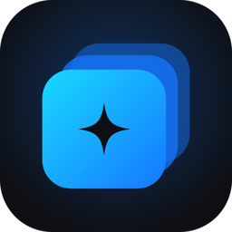
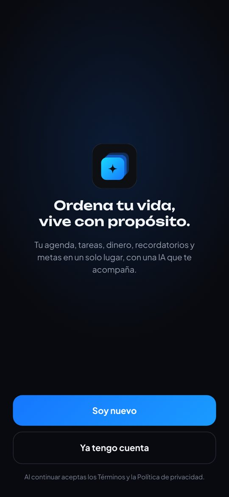
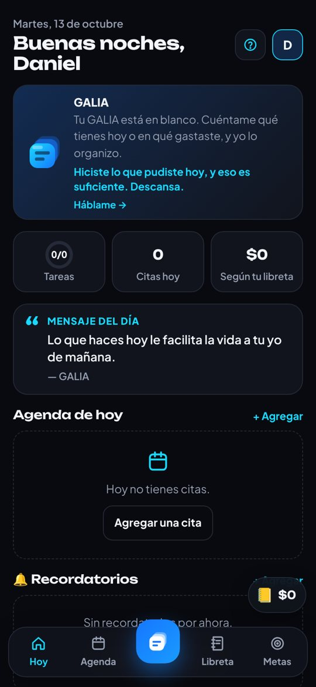
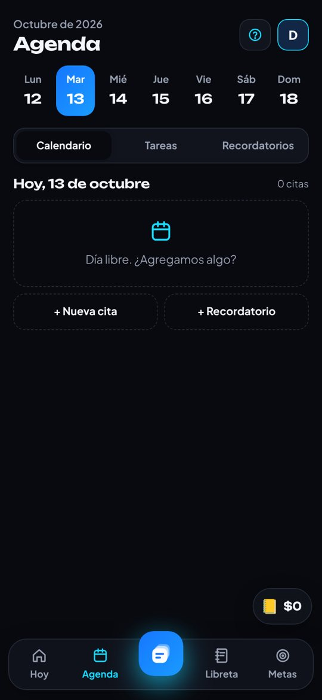
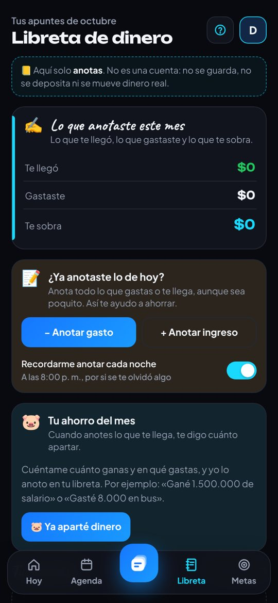
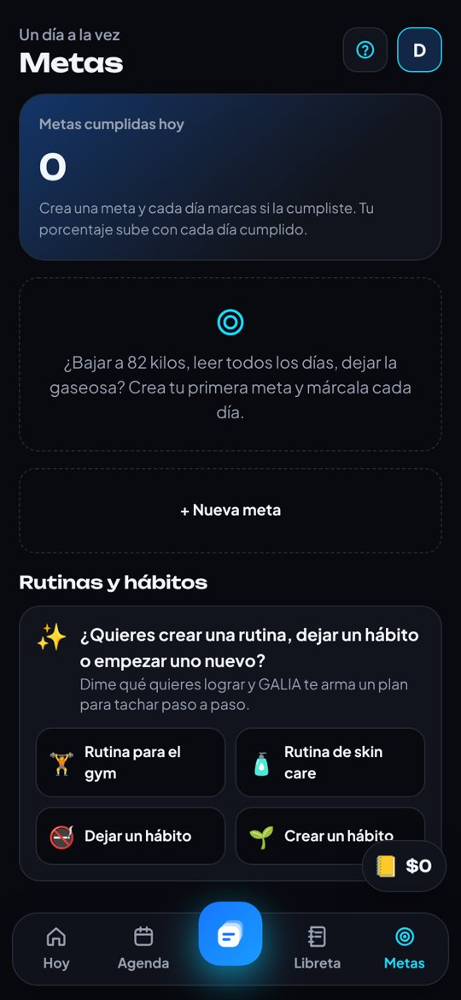
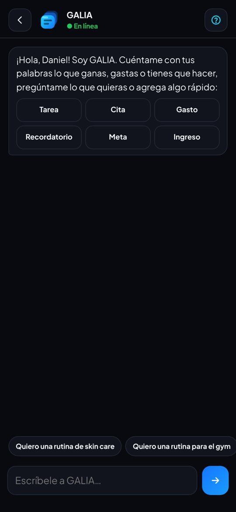

GALIA · Asistente personal con IA
Ordena tu vida, vive con propósito.






El problema
Para organizar el día, una persona termina usando cinco apps distintas: calendario, tareas, finanzas, recordatorios y hábitos.
Mi rol
Todo el proyecto: definición del producto, flujos, diseño de interfaz, identidad de marca y prototipo funcional para Android.
Decisiones de diseño
- Una barra inferior con cinco secciones y la IA en el centro, siempre a un toque.
- Modo oscuro y claro, con acentos en azul cian.
- Atajos rápidos en el chat: tarea, cita, gasto, meta.
Marca
Logo de tarjetas apiladas con destello, tipografía Unbounded, eslogan propio y la mascota “Pila” en dos versiones.
Estado
Beta para Android en pruebas con usuarios cercanos. Siguiente paso: Play Store y App Store.